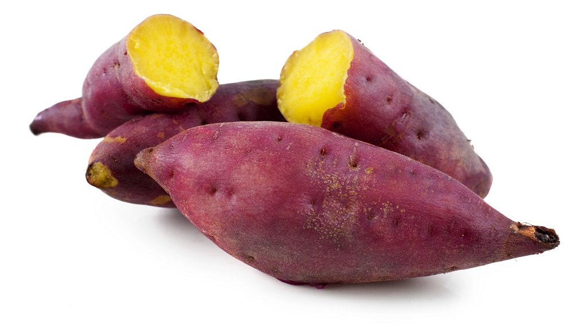

Bạn có bao giờ tự hỏi luộc, hấp, chiên, hay nướng – cách nào tốt nhất để chế biến khoai chưa? 🤔 Hôm nay, cùng mình "mổ xẻ" từng phương pháp để xem đâu là cách ngon nhất, giữ được dinh dưỡng nhất nhé!
🥔 1. LUỘC – Giữ Trọn Dinh Dưỡng Nhưng Dễ Nhạt Nhẽo?
- Ưu điểm:
- ✅ Ít dầu mỡ, tốt cho sức khỏe.
- ✅ Giữ được nhiều Vitamin C và B6.
- ✅ Thích hợp làm khoai nghiền hoặc ăn kiêng.
- Nhược điểm:
- 🚫 Dễ bị mất chất dinh dưỡng vào nước nếu luộc quá lâu.
- 🚫 Khoai có thể bị nhạt, bở nếu không canh thời gian đúng.
💡 Mẹo: Luộc cả vỏ giúp giữ lại nhiều dinh dưỡng hơn!
🍠 2. HẤP – Giữ Được Độ Ngọt Và Dinh Dưỡng Tốt Nhất
- Ưu điểm:
- ✅ Ít mất chất hơn so với luộc.
- ✅ Khoai mềm, ẩm, giữ được độ ngọt tự nhiên.
- ✅ Không cần thêm dầu mỡ, cực tốt cho sức khỏe.
- Nhược điểm:
- 🚫 Tốn thời gian hơn so với luộc.
- 🚫 Nếu hấp không đúng cách, khoai có thể bị khô.
💡 Mẹo: Dùng nồi hấp cách thủy, không cắt khoai quá nhỏ để giữ tối đa dinh dưỡng.
🍟 3. CHIÊN – Giòn Rụm Nhưng Dễ “Béo”
- Ưu điểm:
- ✅ Khoai giòn rụm, thơm ngon, kích thích vị giác.
- ✅ Phù hợp để làm khoai tây chiên, snack.
- Nhược điểm:
- 🚫 Giàu calo do hấp thụ nhiều dầu mỡ.
- 🚫 Khi chiên ở nhiệt độ cao, có thể sinh ra chất không tốt cho sức khỏe.
💡 Mẹo: Dùng nồi chiên không dầu hoặc chiên ngập dầu đúng cách để hạn chế dầu thừa.
🔥 4. NƯỚNG – Thơm Ngon, Dẻo Ngọt Nhưng Dễ Khô
- Ưu điểm:
- ✅ Giữ được vị ngọt tự nhiên, đặc biệt với khoai lang.
- ✅ Không dùng dầu, tốt hơn so với chiên.
- ✅ Thơm, lớp vỏ hơi giòn, bên trong mềm.
- Nhược điểm:
- 🚫 Có thể làm khoai bị khô cứng nếu nướng quá lâu.
- 🚫 Một số vitamin nhạy cảm với nhiệt có thể bị mất.
💡 Mẹo: Gói khoai trong giấy bạc hoặc nướng nguyên vỏ để khoai mềm hơn!
🌟 KẾT LUẬN – NÊN CHỌN CÁCH NÀO?
🔥 Nếu bạn thích giữ trọn dinh dưỡng → HẤP là tốt nhất!
🔥 Nếu muốn khoai mềm mà không mất chất nhiều → LUỘC NGUYÊN VỎ.
🔥 Nếu thích vị thơm ngon, hấp dẫn → NƯỚNG là lựa chọn hoàn hảo.
🔥 Nếu muốn giòn rụm, ngon miệng → CHIÊN, nhưng hạn chế dầu để tốt cho sức khỏe.
👉 Bạn thích cách chế biến nào nhất? Hay có mẹo nào hay hơn không? Bình luận chia sẻ nhé! 👇👇👇
